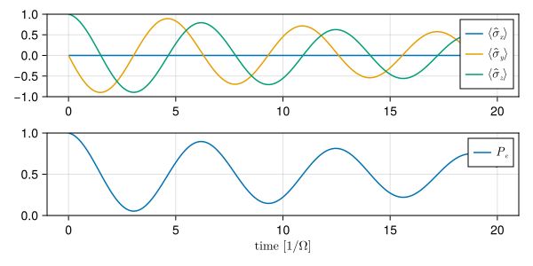
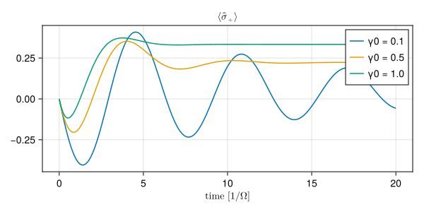
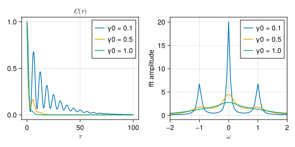

Resonance fluorescence
Inspirations taken from this QuTiP tutorial by J. R. Johansson.
In this tutorial, we demonstrate the following functionalities:
with the example of resonance fluorescence in the weak field limit. We also adopt the convention \(\hbar = 1\) throughout this tutorial.
Introduction
Resonance fluorescence is the radiative behavior of a two-level atom driven by a resonant light mode in a coherent state (usually a monochromatic laser beam). The Hamiltonian \(H\) is given by
- \(H_\text{a} = \frac{\omega_a}{2} \hat{\sigma}_z\)
- \(H_\text{drv} = \Omega \cos(\omega_L t) (\hat{\sigma}^{+} + \hat{\sigma}^{-})\)
with
- \(\omega_a\): Frequency of the two-level atom
- \(\omega_L\): Frequency of the light field
- \(\Omega\): Field strength of the light field
- \(\hat{\sigma}_{x,y,z}\): Pauli matrices
- \(\hat{\sigma}^{\pm}\): Raising (\(+\)) and lowering (\(-\)) operators, equivalent to \(|e\rangle\langle g|\) and \(|g\rangle\langle e|\) respectively
To simplify the problem, we consider the total Hamiltonian (in the rotating frame)
\[
H^\text{rot} = U^\dagger H_\text{a} U + U^\dagger H_\text{drv} U -i U^\dagger \frac{d}{dt} U,
\]
where the unitary operator is given by \(U = e^{-i \omega_L t \cdot \hat{\sigma}_z}\). The third term of \(H^\text{rot}\) is simply \(-\frac{\omega_L}{2}\hat{\sigma}_z\), and the first and second terms are evaluated as:
\[ U^\dagger H_\text{a} U = \frac{\omega_a}{2}\hat{\sigma}_z, \] \[ U^\dagger H_\text{drv} U = \Omega \cos(\omega_L t) \Big[e^{i\omega_L t}\hat{\sigma}^{+} + e^{-i\omega_L t}\hat{\sigma}^{-}\Big]. \]
In the weak field limit, where \(\Omega/\omega_L \ll 1\), we can drop the time-dependent part in the rotating frame through rotating-wave approximation (RWA). First, we expand \(\cos(\omega_L t)\) to its exponential form, \[ \Omega \cos(\omega_L t) \Big[e^{i\omega_L t}\hat{\sigma}^{+} + e^{-i\omega_L t}\hat{\sigma}^{-}\Big] = \frac{\Omega}{2}\Big[(1 + e^{2i\omega_L t})\hat{\sigma}^{+} + (1 + e^{-2i\omega_L t})\hat{\sigma}^{-}\Big] \] The time-dependent parts with frequency \(2\omega_L\) are dropped, yielding \[ H^\text{rot} \simeq \frac{\omega_a}{2} \hat{\sigma}_z + \frac{\Omega}{2} \hat{\sigma}_x - \frac{\omega_L}{2} \hat{\sigma}_z = \frac{\Delta}{2} \hat{\sigma}_z + \frac{\Omega}{2} \hat{\sigma}_x \] where \(\Delta \equiv \omega_a - \omega_L\) is the detuning between the two-level atom and the driving light. In the realistic near-resonance case \(\Delta \simeq 0\), characteristic of the radiative behaviour remains. Thus, for the following demonstration, we only consider the exact resonance \(\Delta = 0\).
Dissipation dynamics
We start by the interaction Hamiltonian between the thermal field and atom \[ \hat{H}_{\text{a}}^\text{int} = \sum_l \alpha_l \left( \hat{b}_l + \hat{b}_l^\dagger \right) \left( \hat{\sigma}^{-} + \hat{\sigma}^{+} \right) \] where for the \(l\)-th mode
- \(\alpha_l\) is the coupling strength with the atom
- \(\hat{b}_l\) is the annihilation operator
By applying rotating wave approximation (RWA) and following the standard procedure of the Born-Markovian approximation, we obtain the atom dissipation rate \(\gamma_0\). Consequently, the dynamics is described by the Lindblad master equation. \[ \mathcal{L} = \gamma_0 n(\omega_a, T) \mathcal{D}[\hat{\sigma}^{+}] + \gamma_0 [1 + n(\omega_a, T)] \mathcal{D}[\hat{\sigma}^{-}] \]
where
- \(n(\omega, T)\): Bose-Einstein distribution of the thermal field at temperature \(T\)
- \(\mathcal{D}[\cdot]\): The Lindblad dissipator (has exactly the same expression in the lab frame and the rotating frame)
Code Demonstration
We define a function that returns the Liouvillian SuperOperator of the system.
function liouvillian_spec(_Ω, _γ0, _KT)
H = _Ω/2 * sigmax()
c_ops = [
√(_γ0 * n_thermal(_Ω, _KT)) * sigmap(),
√(_γ0 * (1 + n_thermal(_Ω, _KT))) * sigmam(),
]
return liouvillian(H, c_ops)
endliouvillian_spec (generic function with 1 method)We first use mesolve to solve the master equation with several observables given in e_ops.
e_ket = basis(2,0)
e_ops = [
sigmax(),
sigmay(),
sigmaz(),
sigmam(),
sigmap(),
e_ket * e_ket'
]
ψ0 = e_ket # set initial state being purely excited to better observe the radiative behaviour
L = liouvillian_spec(Ω, γ0, KT)
print(L)
Quantum Object: type=SuperOperator dims=[2] size=(4, 4)
4×4 SparseMatrixCSC{ComplexF64, Int64} with 12 stored entries:
-0.05+0.0im 0.0-0.5im 0.0+0.5im ⋅
0.0-0.5im -0.025+0.0im ⋅ 0.0+0.5im
0.0+0.5im ⋅ -0.025+0.0im 0.0-0.5im
0.05+0.0im 0.0+0.5im 0.0-0.5im ⋅ We already generate the Liouvillian with c_ops included above. We don’t need to specify the c_ops again in mesolve:
Progress: [ ] 0.5% --- Elapsed Time: 0h 00m 02s (ETA: 0h 06m 40s)Progress: [==============================] 100.0% --- Elapsed Time: 0h 00m 02s (ETA: 0h 00m 00s)Solution of time evolution
(return code: Success)
--------------------------
num_states = 1
num_expect = 6
ODE alg.: OrdinaryDiffEqTsit5.Tsit5{typeof(OrdinaryDiffEqCore.trivial_limiter!), typeof(OrdinaryDiffEqCore.trivial_limiter!), Static.False}(OrdinaryDiffEqCore.trivial_limiter!, OrdinaryDiffEqCore.trivial_limiter!, static(false))
abstol = 1.0e-8
reltol = 1.0e-6By observing the expectation values of the Pauli operators, we see that the Bloch vector \((\langle \hat{\sigma}_x \rangle, \langle \hat{\sigma}_y \rangle, \langle \hat{\sigma}_z \rangle)\) becomes shorter over time, which is consistent with the dissipative behaviour. Also, the population of the excited state \(|e\rangle\) has an oscillation amplitude decaying over time.
expect = real.(sol.expect)
fig1 = Figure(size = (600,300))
ax11 = Axis(
fig1[1,1]
)
lines!(ax11, tlist, expect[1,:], label = L"\langle \hat{\sigma}_x \rangle")
lines!(ax11, tlist, expect[2,:], label = L"\langle \hat{\sigma}_y \rangle")
lines!(ax11, tlist, expect[3,:], label = L"\langle \hat{\sigma}_z \rangle")
axislegend(ax11)
ylims!(ax11, (-1,1))
ax12 = Axis(
fig1[2,1],
xlabel = L"time $[1/\Omega]$"
)
lines!(ax12, tlist, expect[6,:], label = L"P_e")
axislegend(ax12)
ylims!(ax12, (0,1))
display(fig1);
Further, we check the effect of different values of the damping rate. Note that despite these dissipation rates looked enormous at first glance, it is still to the order of the field strength and therefore considered dissipative for the system in the lab frame.
results = []
γ0s = Ω .* [0.1, 0.5, 1]
for γ0 in γ0s
result = mesolve(liouvillian_spec(Ω, γ0, KT), ψ0, tlist, nothing, e_ops = e_ops)
push!(results, (γ0 = γ0, expect = result.expect))
endProgress: [==============================] 100.0% --- Elapsed Time: 0h 00m 00s (ETA: 0h 00m 00s)
Progress: [==============================] 100.0% --- Elapsed Time: 0h 00m 00s (ETA: 0h 00m 00s)
Progress: [==============================] 100.0% --- Elapsed Time: 0h 00m 00s (ETA: 0h 00m 00s)The expectation values dynamics of \(\hat{\sigma}^{+}\) and \(\hat{\sigma}^{-}\) shows the driving-field-induced dipole moment of the atom oscillates and persists.
fig2 = Figure(size = (600,300))
ax2 = Axis(
fig2[1,1],
xlabel = L"time $[1/\Omega]$",
title = L"\langle\hat{\sigma}_{+}\rangle"
)
for (γ0, expect) in results
lines!(ax2, tlist, imag(expect[5,:]), label = "γ0 = $γ0")
end
axislegend(ax2)
display(fig2);
fig3 = Figure(size = (600,300))
ax3 = Axis(
fig3[1,1],
xlabel = L"time $[1/\Omega]$",
title = L"\langle\hat{\sigma}_{-}\rangle"
)
for (γ0, expect) in results
lines!(ax3, tlist, imag(expect[4,:]), label = "γ0 = $γ0")
end
axislegend(ax3)
display(fig3);
We now move to the analysis of the correlation function \(C(\tau) = \langle \hat{\sigma}^{+}(\tau) \hat{\sigma}^{-}(0)\rangle\), which describes the radiative behaviour of the atom towards its surrounding environment. Using correlation_2op_1t, we can obtain the correlation function as a function of \(\tau\) and use spectrum_correlation_fft to obtain the corresponding Fourier transform.
fig4 = Figure(size = (600,300))
ax41 = Axis(
fig4[1,1],
xlabel = L"\tau",
title = L"C(\tau)"
)
ax42 = Axis(
fig4[1,2],
xlabel = L"\omega",
ylabel = "fft amplitude"
)
τlist = 0:0.1:100
for γ0 in γ0s
L = liouvillian_spec(Ω, γ0, KT)
corr = correlation_2op_1t(L, ψ0, τlist, nothing, sigmap(), sigmam())
lines!(ax41, τlist, real(corr), label = "γ0 = $γ0")
fft_ωlist, fft_spect = spectrum_correlation_fft(τlist, corr)
lines!(ax42, fft_ωlist, fft_spect, label = "γ0 = $γ0")
end
xlims!(ax42, (-2,2))
axislegend(ax41)
axislegend(ax42)
display(fig4);Progress: [==============================] 100.0% --- Elapsed Time: 0h 00m 00s (ETA: 0h 00m 00s)
Progress: [==============================] 100.0% --- Elapsed Time: 0h 00m 00s (ETA: 0h 00m 00s)
Progress: [==============================] 100.0% --- Elapsed Time: 0h 00m 00s (ETA: 0h 00m 00s)
Progress: [==============================] 100.0% --- Elapsed Time: 0h 00m 00s (ETA: 0h 00m 00s)
Progress: [==============================] 100.0% --- Elapsed Time: 0h 00m 00s (ETA: 0h 00m 00s)
Progress: [==============================] 100.0% --- Elapsed Time: 0h 00m 00s (ETA: 0h 00m 00s)
In the above plots, one finds that the correlation functions decay faster with higher dissipation rate, and therefore the lower spectral peaks. On the other hand, the higher spectral peaks means the radiation is brighter in terms of intensity.
Version Information
QuantumToolbox.jl: Quantum Toolbox in Julia
≡≡≡≡≡≡≡≡≡≡≡≡≡≡≡≡≡≡≡≡≡≡≡≡≡≡≡≡≡≡≡≡≡≡≡≡≡≡≡≡≡≡≡≡≡
Copyright © QuTiP team 2022 and later.
Current admin team:
Alberto Mercurio and Yi-Te Huang
Package information:
====================================
Julia Ver. 1.11.3
QuantumToolbox Ver. 0.25.2
SciMLOperators Ver. 0.3.12
LinearSolve Ver. 2.39.0
OrdinaryDiffEqCore Ver. 1.15.1
System information:
====================================
OS : Linux (x86_64-linux-gnu)
CPU : 4 × AMD EPYC 7763 64-Core Processor
Memory : 15.615 GB
WORD_SIZE: 64
LIBM : libopenlibm
LLVM : libLLVM-16.0.6 (ORCJIT, znver3)
BLAS : libopenblas64_.so (ilp64)
Threads : 4 (on 4 virtual cores)